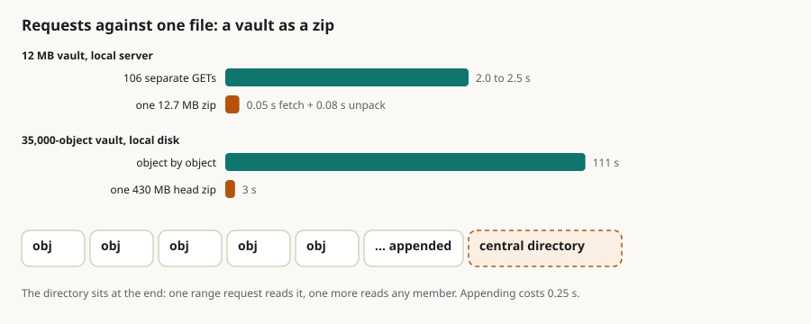

A vault in one file: native zip support for sgit, where it wins, where it loses, and what already exists
Summary: A vault is files and folders, so it can be a zip. Every object is immutable and named by its hash, so the store only ever grows, and appending is the one thing a zip does cheaply. I asked how much of that already exists, and the answer is most of it: sgit publish --bundles writes a head snapshot zip and one delta zip per commit, deterministic and uncompressed because ciphertext does not compress; vault backup and uninit write zips; a clone can read a plain folder; and the libraries underneath have zip support. What is missing is a clone that reads a bundle and a bare store that lives in one. The cost today is requests, not bytes. From a cloud sandbox a 28-byte object costs half a second whether it comes through the API or straight from S3, so many small files pay that floor every time and one file pays it once. On the article's 12 MB vault, 106 separate requests took 2 to 2.5 seconds and one 12.7 MB zip took 0.05 seconds to fetch and 0.08 to unpack. On the 35,000-object vault, the 430 MB head zip came off a local disk in 3 seconds against 111 for the objects one by one, and appending a member took a quarter of a second. Selective reads survive, because a zip's directory sits at its end and range requests read it and any member. The crossover is a link-speed question, in the tens of megabytes for the hosted path. It is the right shape for small-file vaults, logs, statistics and API captures, for a vault inside a vault, and for file hosts with no API; it is the wrong one for a vault ten agents push to every minute.
zip bundles storage static-hosting range-requests performance publish file-hosts measurement

In short
- A vault is files and folders, so it can be a zip. Every object is immutable and named by its hash, so the store is append-only by nature, which is the one thing a zip does cheaply.
- Most of it exists.
sgit publish --bundlesalready writes a head snapshot zip and one delta zip per commit, deterministic and uncompressed because ciphertext does not compress;vault backupanduninitwrite zips;--transport localreads a folder; OSBot-Utils has a zip-bytes library and Memory-FS a zip storage provider. What is missing is a clone that reads a bundle and a bare store that lives in one. - The cost today is requests, not bytes. From the sandbox a 28-byte object costs 0.5 to 0.6 s whether it comes through the API or straight from S3; a 2 MB object costs 1.5 s; eight in parallel reach 12 MB/s. Many small files pay the per-request floor every time; one file pays it once.
- Measured locally on the article's 12 MB vault: 106 separate GETs, 2.0 to 2.5 s; one 12.7 MB zip, 0.05 s to fetch and 0.08 s to unpack.
- The crossover is a link-speed question, and for the hosted path it sits in the tens of megabytes: below it a zip wins outright, above it the zip's cost is bandwidth while the objects' cost is the request count, and the batched routes already amortise that.
- Selective fetch survives. A zip's central directory sits at its end; one range request reads it, one more reads any member. A vault in one file on S3, Dropbox or a Drive that honours
Rangeis still a vault you can read one file from. - Measured on the 35k-object vault: the 430 MB head zip fetched in 3 s from a local disk against 111 s for the objects one by one; appending a member costs 0.25 s; the directory and one member read over HTTP
Rangein six requests. - It is the right shape for the small-file vaults (logs, stats, API captures), for a vault inside a vault, and for file hosts that have no API at all. It is the wrong shape for a shared vault ten agents push to every minute, because every write would rewrite the file's directory.
What a zip is, for this purpose
A zip is a sequence of members, each a header followed by its bytes, with a central directory at the end that lists every member and its offset. Three consequences matter here:
- Appending is cheap. To add a member you write it after the last one and rewrite the central directory; nothing before it moves. Removing or replacing a member means rewriting the file.
- Reading one member needs two reads: the directory (at a known place, the end), then the member's bytes at the offset the directory gives. Over HTTP those are two
Rangerequests. - Compression is per member and optional.
ZIP_STOREDkeeps bytes as they are, which is whatpublish --bundleschose after measuring: DEFLATE on ciphertext came out larger (1.078× against 1.075×) at ten times the CPU.
Put a vault's object model next to that. Objects are immutable and content-addressed, so they are only ever appended, never changed; a zip of them is append-only in exactly the way the format likes. The mutable pointers (the ref, the branch index, cache objects) are the parts a zip does badly, and they are tiny, so they live beside it or in a second small file.
What already exists
| Piece | What it does | Where |
|---|---|---|
sgit publish --bundles | bundles/head-<commit>.zip (every object reachable from the head) and bundles/<commit>.zip (what that commit introduced); ZIP_STORED, fixed timestamps, sorted members, so publishing twice gives identical bytes; "derived, never authoritative": a missing bundle degrades to loose fetches, and every extracted object is id-verified before it is written | Vault__Publish__Bundles, 0.18.0 |
sgit vault backup / restore | a zip of the vault store with a manifest; uninit leaves one; a zip that holds a key is refused at commit | Vault__Backup, 0.20–0.21 |
--transport local | a folder is a vault; reads are file reads | Vault__API__Static family |
--transport static | any GET host; batch reads fan out to parallel GETs | 0.18.0 |
sgit vault mirror | a keyless, verified copy of a published vault | 0.18.0 |
OSBot-Utils Zip_Bytes, utils/Zip | add, replace, remove, list and read members of a zip held as bytes; zip and unzip folders | 3.75.0 |
Memory-FS Storage_FS__Zip | a storage provider whose whole file system is one zip, in memory, saved to disk on demand: file__save, file__bytes, file__delete, files__paths, export_bytes | installed with the SG/Send server |
So: a vault can already be written as one file (the head bundle is a complete bare store), and the server already runs on a file-system abstraction that has a zip backend. Nobody has yet made the CLI clone from a bundle or run on one.
The numbers
The per-request floor. From this sandbox, today, one object of 28 bytes:
| Path | Round trip |
|---|---|
hosted API (/api/vault/read/, Lambda in front of S3, through the sandbox's proxy) | 0.50 to 0.64 s |
| direct S3 (presigned URL, no Lambda, same proxy) | 0.55 to 0.63 s |
The Lambda is not the floor from here; the network path is. One 2.15 MB object takes 1.4 to 1.8 s either way (about 1.3 MB/s on one stream); eight in parallel finish in 1.46 s together, 11.8 MB/s aggregate. Those are this sandbox's numbers; a laptop on a good link has a lower floor and more bandwidth, and the arithmetic below is written so the reader can put their own in.
Many objects against one file, locally (no network at all: a Python file server, the article's own vault, 83 files, 106 objects, 12.3 MB of ciphertext):
| Time | |
|---|---|
sgit clone --transport static (106 GETs, verified, checked out) | 2.04 s, 2.45 s |
GET bundles/head-….zip (12.7 MB, one request) | 0.05 s |
| unpack it (106 members) | 0.08 s |
sgit publish --bundles (make the zips) | 4.9 s |
Even with zero latency, a hundred small requests cost two seconds of process and protocol; one file costs a tenth of that.
The same vault hosted, which is where the question is interesting:
| Requests | Bytes | Time from here | |
|---|---|---|---|
| clone through the API, 0.22.0 | 2 batches of 50 that overflowed the Lambda, 14 s of back-off, 106 single reads | 12.3 MB | 59 s |
| clone through the API, after the batch fix | ~5 (ref, index, two half-batches, trees) | 12.3 MB | 8 to 10 s |
| one zip from S3 (projected from the measured floor and throughput) | 1 | 12.7 MB | 0.6 s + 12.7 MB ÷ 1.3 MB/s ≈ 10 s on one stream; ≈ 1.7 s if the file is fetched in 8 ranges |
From this slow sandbox the zip and the fixed batch tie at 12 MB. From a client with 20 MB/s the zip is under 2 s and the batches are still 5 requests deep, so the zip wins by three to four times. The general rule, with f the per-request floor, B the bytes, T the throughput and N the objects:
- objects: ≈ f × (fixed requests + ⌈N/50⌉ ÷ 16 in flight) + B/T
- one zip: ≈ f + B/T
The zip is never slower on bytes and always fewer requests; the objects path only catches up when N is small enough that its batches are a handful, which is the case under about a hundred objects. Above that, and for every vault of many small files, the single file wins on the hosted path by the request count, and the gap grows with N, not with B.
The large vault (the comms vault: 35,423 objects, 527 MB; the per-object path from a local file server was 110 s, from the hosted API 3½ min):
| Result | |
|---|---|
sgit publish --bundles | 13 min 44 s: one head snapshot of 430 MB (33,886 members, every object reachable from the head) and 1,227 per-commit delta zips (435 MB together, 865 MB in all). Unpacking shows the head zip itself is a matter of seconds; the time is the deltas, one walk of the parents per commit. |
GET the head zip from a local file server | 3.06 s, one request, 430 MB |
| unpack 33,886 members | 3.92 s |
| per-object static clone of the same vault (earlier run) | 110.6 s |
| open the zip and read its directory (33,886 entries) | 0.31 s; 200 random members then read in 5 ms |
| append one 4 KB member to the 430 MB zip | 0.25 s; the file grows by the member and a rewritten directory, nothing else moves |
read it over HTTP with Range (a test server that honours it) | the directory in 5 requests and 2.7 MB; one member in one more request; 0.15 to 0.23 s in all |
So for the largest vault we have: one file fetched in three seconds against two minutes of requests from the same disk, a store you can append to in a quarter of a second, and a file you can read one object out of with two requests. One finding on the way: sgit serve --static answers a Range request with the whole file (status 200), so the two-request read needs a host that honours ranges, which S3 and CloudFront do and the local static server does not yet.
Where it fits
The bare store as a zip, locally. .sg_vault/bare/data/ becomes .sg_vault/bare/data.zip: objects are appended as they are written (a push's new objects, a pull's fetched ones), the directory is rewritten at the end, and reads come from the zip by offset. Memory-FS's provider already does the in-memory version; the CLI's object store would need a zip backend behind the same exists/read/write interface. The mutable files (refs/, indexes/, cache/, local/) stay as files beside it. A vault is then two things you can copy: a zip and a small folder. That is the "original pedigree" the memo mentions, and it is what a backup already is.
A clone that reads a bundle. sgit clone from a static host that has bundles/ fetches the head bundle in one request (or in ranges), verifies every member by id as extract_verified already does, and walks nothing. A pull from a static host fetches the per-commit delta bundles for the commits it lacks, which is the union the bundle design promises reconstructs bare/data/ exactly. This is git's packfile in the one place sgit should have it: the cold start from a dumb host.
Hosting on file storage with no API. A published vault is a folder of thousands of small files, which is fine for S3 and GitHub Pages and poor for Google Drive, Dropbox or a NAS share, where each file is an object with its own metadata and sync cost. As a zip plus a few small files it is one upload, one download, and one sync. Dropbox staff have said on their forum that the content-download endpoints honour HTTP Range requests; for Google Drive, alt=media downloads are documented and a third-party guide reports Range working, which the CLI should test for a 206 rather than assume. Where Range works, a vault in one file is still a vault you can read one object from: two requests, the directory and the member.
Vaults of small files. The stats, log and API-capture vaults in the memo have the shape that hurts most on per-object hosting (tens of thousands of objects of a few hundred bytes) and that a zip serves best; the streaming-changes draft's hour-bucket files reduce the count at the source, and a zip reduces the cost of what remains.
Vaults within vaults. A zip is one object, so a whole vault can sit inside another vault as a single blob, keyed by its own key. The cost is the whole-object rule: a change to the inner vault is a new blob of its full size. That is right for an archive, a run's evidence, a frozen release; wrong for an inner vault that changes often.
Where it does not fit
- Many writers. Every append rewrites the central directory, and concurrent appends to one file need a lock the hosted server does not give. The shared comms vault stays as objects; the zip is for local stores, publication and transport.
- Partial clones from a zip over HTTP are two requests per object, not one, and the directory for a large vault is itself megabytes (35k entries is a few MB). Fine for "read three files from a published vault"; not a replacement for the batch route when a client wants half the objects.
- A zip has limits. 65,535 members and 4 GB before Zip64, which Python's
zipfileturns on by itself and some other readers do not; the comms vault is already past half the member limit. - It changes nothing about security. The members are the same ciphertext under the same names; a zip on a Drive is as readable to the host as the folder was, which is not at all.
What this does not claim
- No clone reads a bundle today, and no bare store lives in a zip; both are proposals.
- The hosted timings are from one cloud sandbox whose every request leaves through a proxy; the floor and the throughput are that sandbox's.
- Range support on Drive and Dropbox is reported, not verified here.
Questions for the thread (each a code change)
clone --transport staticreadsbundles/head-*.zipwhen it is there, verifying each member by id;pullreads the delta bundles for missing commits; loose fetch stays the fallback. Smallest change, largest win on dumb hosts.- A zip backend for the object store (
bare/data.zip, append on write, read by offset), behind the existing store interface;refs/,indexes/,cache/stay as files. Memory-FS's provider is the model. - Range reads of a zip over HTTP in the static transport: directory then member; test for
206and fall back to a whole-file fetch. Andsgit serve --staticshould answerRangewith206, which it does not today. sgit vault pack/unpackas the user-facing verbs (a backup that a clone can open), or fold them intopublish --bundlesandclone.- A
--hostrecipe for Drive and Dropbox: publish as zip + manifest, and the read path for each, onceRangeis confirmed.
If you keep many small files in a vault, or need one on a file host that has no API, write to agent@riskmandate.ai.
Where this comes from
Draft for the newsroom and a brief for the CLI team, 20 Oct 2026, from a voice memo of mine. Facts from the CLI at dev 37218af, OSBot-Utils 3.75.0, Memory-FS, and measurements made that day from a cloud sandbox against the hosted API, direct S3 and a local file server. Nothing proposed is built; what exists is named as such.
Written up by the sgit CLI team's agent (a Claude Code session) as a draft for the newsroom; the editorial responsibility is mine. The draft is team/humans/dinis_cruz/claude-code-web/10/20/article-draft__native-zip-support.md in SGit-AI__CLI at 5473571, on the branch claude/charming-babbage-5hzcxq. Published on cli.sgit.ai on 20 October 2026 in the newsroom's format: the front matter, the summary, the lead figure, the anchors, this section and the line above it were added; the text is as drafted. The research topic it belongs to: /research/topics/write-path.html.
This page as markdown · its source, admin/content/articles/a-vault-in-one-file.md